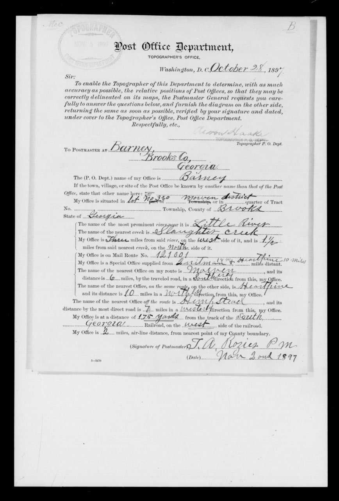
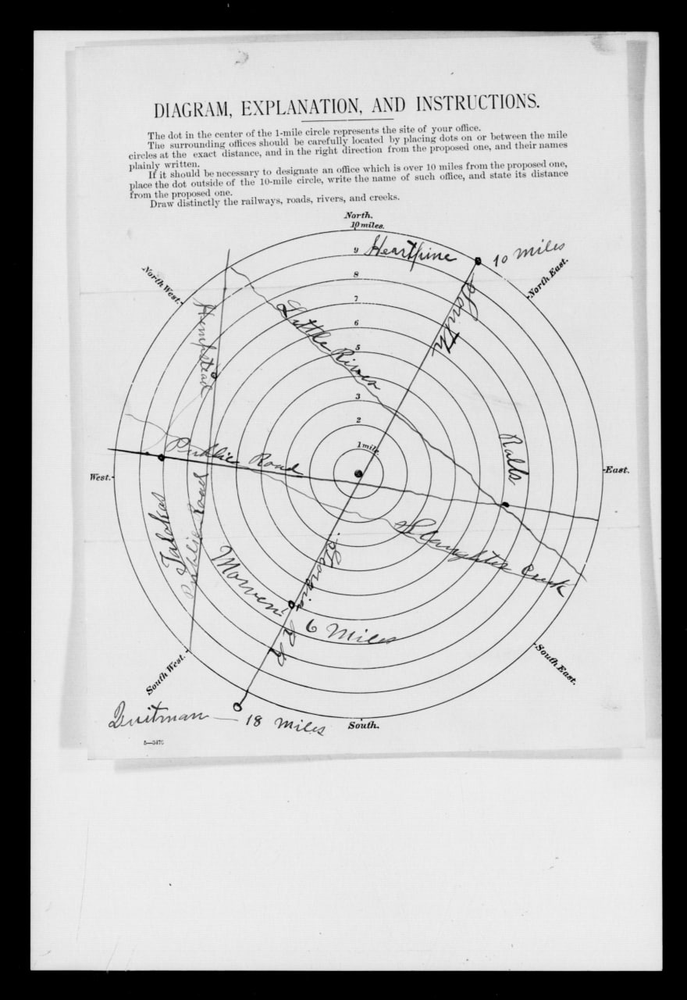
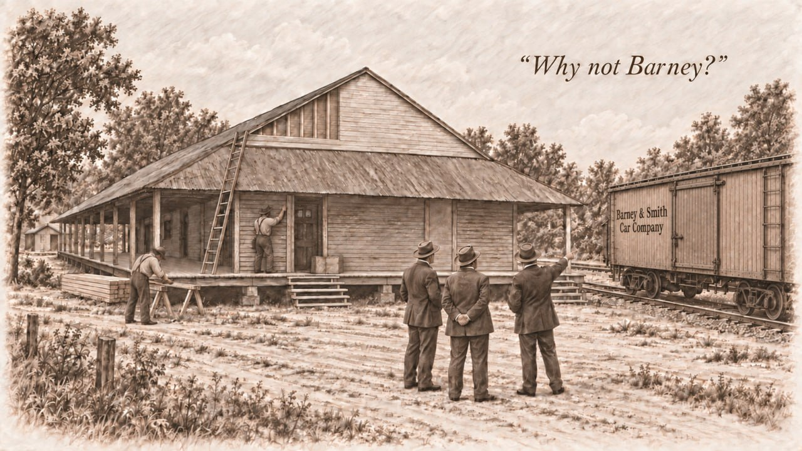

Origins: Foster to Barney
The earliest located public record using the place name Barney is a deed executed on November 20, 1896. Celia Davis conveyed Emma J. Anderson two acres in Land Lot 279, east of the South Georgia Railway, described as being “in the town of Barney.” The deed was recorded on April 22, 1897. A newspaper first called Barney a station on the South Georgia Railroad on June 3, 1897.[5][9]
The town's direct predecessor was Foster, a small postal, timber, and naval-stores settlement near Folsom Bridge. Federal records place Thomas A. Rozier as Foster's postmaster by April 4, 1890. Newspapers also document business activity involving Rozier and his partners during the early 1890s. Huxford later dated a Rozier, Connolly & Company turpentine still at Foster to 1892; the federal appointment and business notices are contemporary records.[2]
McNiel and Rozier assembled two separate landholdings in October 1890. On October 9, J. H. Croft conveyed McNiel & Rosier about 325 acres on the north side of Land Lot 227, the tract associated with Foster. Nine days later, Henry G. Turner conveyed James T. McNiel and Thomas A. Rozier the whole of Land Lots 320 and 325, 980 acres in all. The purchases were part of the same short period of expansion, but they were separate deeds from different sellers. Rozier, Conoly & Company did not make either original purchase; the Conoly brothers entered the Foster business in November 1891.[14]
A Post Office Department report dated February 9, with certification apparently dated February 11, proposed changing the office's name from Foster to Barney and moving it to the railroad. It located the proposed office in land lot 320 of the 12th district and put Foster in land lot 227, about three miles southeast. The application estimated roughly 100 people in the proposed village and 400 to 500 in the entire area the office would serve. Those are contemporary estimates, not census totals.[4]
Four land lots become a town
Barney did not begin with one owner filing one subdivision. Four separate title histories met at the railroad and the crossing later known as Main Street and First Avenue:[9][10][11][12][13]
- Land Lot 279: On October 3, 1896, C. M. Hitch and Robert Stroud granted the South Georgia Railway a 100-foot right-of-way across the southwest quarter. The November 20 Davis–Anderson deed shows that the Barney name was already in local legal use seven weeks later.
- Land Lot 320: Henry G. Turner conveyed the whole of Land Lots 320 and 325—980 acres—to James T. McNiel and Thomas A. Rozier on October 18, 1890, nine days after McNiel & Rosier acquired the separate Foster tract in LL227. Rozier, Conoly & Company later conveyed LL320 and LL325 to Savannah Naval Stores Company on October 7, 1894. On December 1, 1896, the company sold the entire 490-acre LL320 to Sallie A. Rozier. Her later deeds created church, school, residential, and commercial parcels along named streets. The timing is consistent with planned development, although no located record states why she bought the lot.
- Land Lot 321: Ancel Lawrence acquired a 245-acre tract described in K/721 as the west half. Later deeds record a series of small residence, business, church, and industrial parcels in LL321, but they do not establish that those town parcels came from the west half. A 1914 deed also shows Lawrence conveying 200 acres described as part of the east half, and the intervening title has not been found. His December 26, 1896, station deed cannot be assigned to LL321 from its operative description: the land-lot number is blank, and “LL321” appears only as a later marginal or index notation.
- Land Lot 278: A December 19, 1896, order by Judge Hansell authorized a commissioner sale under a numbered town plan prepared by Joel Mable. The surviving deed identifies business and residence lots, a 50-foot First Street, a 20-foot alley, and residence lots measuring 140 by 200 feet. N/534 bounds the proposed half-acre station parcel north by Hodges land, east by Berryhill land, and south by church property. Those calls are consistent with the Hodges estate's LL278 holdings but do not establish the station parcel's land lot. The exact parcel remains unresolved because N/534 leaves the land-lot number blank, conveys only an undivided half interest, and does not identify the owner of the other half. The separate Joel Mable plat sheet has not been located.
This sequence shows a railroad town taking shape before the postal move was completed and nearly seven years before incorporation. Sallie Rozier controlled the southwest sector. Ancel Lawrence held the west half of LL321 under K/721 and later sold parcels identified as lying in LL321, but the present title chain does not place the platted town lots in that west-half tract; his later ownership also included part of the east half. He also conveyed an interest in the proposed station parcel. Several owners conveyed railroad and street-edge parcels in LL279, while the Hodges estate and commissioner C. W. Ryall used Joel Mable's numbered plan in LL278. The surviving deeds do not establish which land lot contained the station parcel, and the records do not identify one founder.[9][10][11][12][13]
Barney's street center lies at the common corner of four land lots: 321 to the northwest, 278 to the northeast, 320 to the southwest, and 279 to the southeast. That four-lot corner falls in the center of the intersection of Main Street and First Avenue. Local history places an open deep well at the same point, in the middle of the crossing, where travelers watered their horses. The 1908 Brooks County map confirms the lot geometry but does not label the well.[8]
Huxford dated an excursion between Heartpine and Quitman to February 2, 1897, while railroad reference works place regular service in March. The difference may reflect a ceremonial trip followed by regular operation, but the surviving evidence does not settle that point. Trains were using the line early in 1897.[3]
The earliest located newspaper reference to Barney appeared on June 3, 1897, when a report of J. J. Oglesby's broken leg called it a station on the South Georgia Railroad. Federal records name Thomas A. Rozier as Barney postmaster on July 26. A later questionnaire, dated October 28 and signed by Rozier on November 2, placed the office about 175 yards west of the track and described daily mail on the Quitman-to-Heartpine route. Together, these records document the move of the Foster post office to the railroad and its renaming as Barney. The deeds now prove that the name and a court-authorized town plan were already in use before the postal relocation, but they do not reveal who selected the name or when the first passenger train stopped.[2][4][5][9][13]


Two later traditions describe the first buildings at the new station. Huxford says the Rozier family moved from Foster and built Barney's first residence near present-day Third Avenue and Church Street. Stephen W. Edmondson recorded Pat Blease's account that mules moved a metal commissary building from Foster, with logs repeatedly carried from the rear to the front as rollers. The family's move and Rozier's postal role are documented, but no located deed, tax record, or contemporary newspaper proves the first-residence claim or the details of the commissary move. The two stories concern separate buildings.[1][2][6]
Mrs. D. H. Purvis and Folks Huxford said the station was named through the Oglesbys' relationship with the Barney & Smith Car Company of Dayton, Ohio. In the traditional story, local leaders were discussing what to call the new station while a Barney & Smith railroad car stood nearby. One of the men pointed to the company's name on the car and asked, "Why not Barney?" An October 1897 report confirms that the Oglesby mills were filling a large order for railroad-car sills involving Barney & Smith, but that order came after the Barney name was already in use. A 1901 notice mentioning "Messrs. Barney and Stevens of Dayton" also does not identify who selected the name. No located railroad minute, postal record, plat, letter, or contemporary article verifies the naming conversation. The Barney & Smith explanation is a plausible later tradition, not a documented naming event.[1][6][7]

Sources used on this page
- [1] Mrs. D. H. Purvis, "Barney," in Folks Huxford, The History of Brooks County, Georgia, 1858-1948 (1948), pp. 388-390; Huxford's related county-history passages on Foster, Barney, local physicians, schools, and churches.
- [2] National Archives, Post Office Department, Georgia postmaster appointments, Foster and Barney entries for Thomas A. Rozier, Ancestry record images 1630513 and 1630564; see also the Thomas A. Rozier profile.
- [3] Huxford, History of Brooks County, railroad chronology; Poor's railroad references summarized on the South Georgia Railway Company page.
- [4] National Archives, Post Office Department reports of site locations, M1126, roll 102, NAID 68271694, images 0028, 0029, 0030, and 0031.
- [5] Morning News (Savannah), June 3, 1897, p. 2, Georgia Historic Newspapers; Newspapers.com image 852579985.
- [6] Stephen W. Edmondson, Remembering Morven and the Old 660th District (Bloomington, Indiana: iUniverse, 2014), chapter 23; local tradition attributed there to Pat Blease and the later account dating Barney's public telephone exchange to 1912.
- [7] Valdosta Times, October 26, 1897, Newspapers.com image 889778923; Tifton Gazette, November 5, 1897, p. 7, Georgia Historic Newspapers; Morning News, February 12, 1901, Newspapers.com image 879559707.
- [8] R. D. Flippen, Map of Brooks County, Georgia (Hudgins Co., 1908), Georgia Archives County Maps, record cmf0526; James E. Jones, local-history identification of Main Street, First Avenue, and the open well used for watering travelers' horses, September 26, 2026.
- [9] Brooks County Deed Book M, p. 425, Celia Davis to Emma J. Anderson, executed November 20, 1896, recorded April 22, 1897, FamilySearch original image.
- [10] Brooks County Deed Book M, p. 266, C. M. Hitch and Robert Stroud to South Georgia Railway Company, October 3, 1896, FamilySearch original image.
- [11] Brooks County Deed Book L, pp. 363–364, Rozier, Conoly & Company to Savannah Naval Stores Company, October 7, 1894, FamilySearch images continued; Deed Book M, p. 385, Savannah Naval Stores Company to Sallie A. Rozier, December 1, 1896, FamilySearch original image.
- [12] Brooks County Deed Book K, p. 721, B. F. Hitch to Ancel Lawrence, February 8, 1893, FamilySearch original image; Deed Book Y, p. 29, Ancel Lawrence to Anna Ruth Whitehurst, June 20, 1914, describing 200 acres as part of the east half of LL321, FamilySearch original image; Deed Book N, p. 534, Ancel Lawrence to South Georgia Railway Company, December 26, 1896, FamilySearch original image. K/721 proves the west-half acquisition but does not identify it as the source of the later platted town parcels. N/534 leaves the land-lot number blank in the operative description; “LL321” is a later marginal or index notation. Its boundary calls are Hodges land on the north, Berryhill land on the east, and church property on the south.
- [13] Brooks County Deed Book M, p. 538, C. W. Ryall, commissioner, to South Georgia Railway Company, October 16, 1897, reciting Judge Hansell's December 19, 1896 order and Joel Mable's town plan, FamilySearch original image.
- [14] Brooks County Deed Book K, p. 115, J. H. Croft to McNiel & Rosier, October 9, 1890, about 325 acres on the north side of LL227, FamilySearch original image; Deed Book K, p. 120, Henry G. Turner to James T. McNiel and Thomas A. Rozier, October 18, 1890, all of LL320 and LL325, FamilySearch original image; November 1891 partnership deeds documenting the Conoly brothers' later entry into the Foster business.